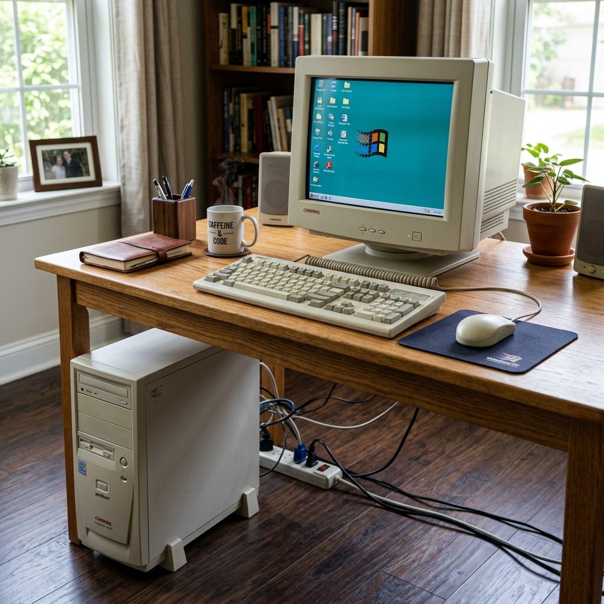

O Segredo Principal: Avalie a sua rotina
Muitos alunos entram na loja e compram o aparelho mais bonito ou o que o vendedor indicou. O segredo para não se arrepender é olhar para a sua rotina. Você viaja muito? Você tem dores nas costas? Você gosta de telas bem grandes? Vamos comparar as duas opções como se estivéssemos escolhendo entre um carro esportivo e uma van de família.
1. O Computador de Mesa (Desktop)
O "Computador de Mesa" (também chamado de Desktop) é aquele tradicional, que fica fixo em um móvel. Ele é composto por várias peças separadas: a "torre" (o cérebro da máquina), o monitor (tela), o teclado e o mouse.

Vantagens (Por que comprar?):
- Durabilidade e Manutenção: É como um carro que você pode trocar as peças aos poucos. Se o teclado estragar, você compra um teclado de R$ 30 e resolve. Se ele ficar lento daqui a 3 anos, o técnico pode colocar uma peça nova (memória) de forma muito barata.
- Conforto Visual e Físico: Você pode usar monitores enormes (24 polegadas ou mais) e colocar a tela na exata altura dos seus olhos, evitando dores no pescoço.
- Preço: Costumam ser mais baratos que os notebooks se compararmos a mesma potência.
Desvantagem:
Ele é fixo. Aconteça o que acontecer, você precisa sentar naquela cadeira específica da casa para usá-lo. Além disso, se faltar luz na rua, ele desliga imediatamente na sua cara.
2. O Notebook (Laptop)
O Notebook é o "tudo em um". A tela, o teclado e o "cérebro" estão espremidos dentro de uma única prancheta dobrável. Ele possui uma bateria interna, como um celular gigante.
Vantagens (Por que comprar?):
- Liberdade Total: Você pode levá-lo para o sofá, para a cama, para a mesa da cozinha ou para uma viagem. A casa inteira vira o seu escritório.
- Independência de Energia: Faltou luz? Sem problemas. A bateria interna mantém o aparelho ligado por horas, evitando que você perca o que estava fazendo.
Desvantagens:
- Manutenção Cara: Como as peças são espremidas, se o teclado do notebook estragar, você terá que levar na assistência técnica e pagar caro para abri-lo.
- Ergonomia: É comum as pessoas ficarem encurvadas para olhar a tela do notebook, o que pode causar dores no pescoço e coluna se usado por muitas horas seguidas.
O Veredito do Professor
Se você tem espaço em casa, preza pelo conforto visual (tela grande) e quer um aparelho que dure muitos anos sem dar dor de cabeça, escolha o Computador de Mesa (Desktop).
Se você viaja com frequência, mora em um lugar com pouco espaço, ou simplesmente quer a liberdade de ler suas notícias deitado no sofá, o Notebook é a melhor opção.
Checklist da Escolha
- Entendi que o Desktop permite trocar peças mais barato caso estrague.
- Entendi que o Notebook me dá liberdade de espaço e sobrevive à falta de luz.
- Pensei na minha postura e conforto antes de decidir.
- Agora me sinto seguro para tomar a melhor decisão na loja.
Parabéns! Fim do Módulo 1 🏆
Você acaba de concluir a leitura de todo o nosso guia sobre Computadores. Agora você sabe ligar, usar o mouse, criar pastas, recuperar senhas e até como comprar a melhor máquina. Você está pronto para avançar para o Módulo 2 e desvendar os segredos do aparelho que está no seu bolso: O Celular!